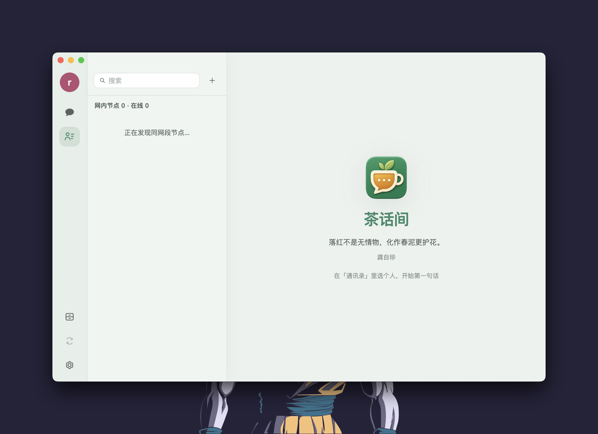

PROTOTYPE
茶话间 + agent · 完整群聊外壳 · wayfinder ticket #37
问题：
Slack / buzz 式完整应用外壳 —— 左侧 = 工作区 rail + 群聊列表（无人物头像），群聊消息流里才出现头像。agent 成员怎么长？
三个 variant（底部条 /
← →
键切换）。右上角面板实时显示内存 state。 约束：#36 词表 / #17 五档色 / #34 本机视角 / #29 正式消息 / #30 pending。

发送
Enter 发送 · 正式消息进群流（#29）· 过程进机库（点 agent 行「过程」）
←
A
→
?variant=A|B·C